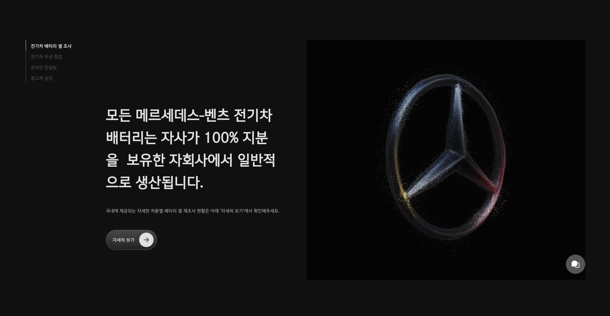
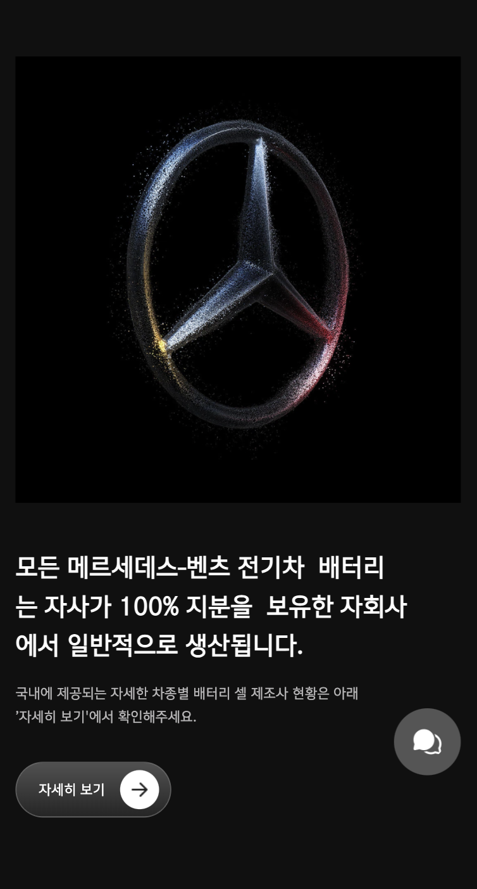

mercedes-benz
프로젝트 종류
반응형 웹디자인 & 웹퍼블리싱
프로젝트 인원
개인 프로젝트 / 1인
프로젝트 기간
2024.09.17 - 2024.09.30
Skills & Tools
JavaScript, jQuery, GSAP, SCSS | Figma
반응형 웹디자인 & 웹퍼블리싱
개인 프로젝트 / 1인
2024.09.17 - 2024.09.30
JavaScript, jQuery, GSAP, SCSS | Figma

1. 브랜드 제품의 특성을 강조하기 위한 효과적인 이벤트 구현
- GSAP ScrollTrigger 활용
- SVG와 animaion의 활용
- parallax animation에 대한 이해
2. 브랜드의 주요 서비스 내용에 대한 정확한 전달과 메세지 강조

Brand 핵심 제공 서비스 조사
기존 웹페이지의 구조 분석 및 리뉴얼 방향 고안
Brand의 제품 소개 방향성 고안
핵심 컬러 활용 스타일 변경 및 컬러 추가
- 브랜드 선정, 공식 사이트 구조 파악
- 디자인 컨셉 결정 / 피그마 작업 시작
- 퍼블리싱 가이드라인 수립
- 각 secion에 들어갈 소스 서치 / 아카이빙
- html 구조 작성
- parallax animation 관련 서치
- CSS, Script 작성
- mo 버전 CSS 작성
- 각 디자인 버튼/스타일 디테일 수정
- script 오류 및 디테일 체크
# 도전적인
# 웅장한
# 클래식한
MBK CorpoSLight
MBK CorpoS
MBK CorpoA
#E5E4E5
#B3B2B3
#555555
#101010
#006CD0
#2E2E2E
#6C6C6C
기존 웹사이트에서 사용중인 포인트 컬러와 함께 모노톤을 메인컬러로 사용하고, '자동차'라는 제품의 특성이 잘 보이도록 전반적으로 무게감이 느껴지는 것에 집중했습니다.
mobile breakpoint : 430px / tablet breakpoint : 1100px
mediaQuery를 활용한 반응형 웹 제작
ScrollTrigger의 pin 기능을 활용해 리스트 형태의 섹션 구성
hover, opacity, transition을 사용한 자연스러운 마우스 이벤트
mouseEvent를 활용한 menu 내비게이션 구현
transition을 사용해 자연스러운 움직임 구현
parallax animation의 작동 개념의 이해와 활용
→ flex의 'order'를 활용하여, 모바일 버전에서는 이미지가 먼저오도록 'order: 1;'로 설정한다.
 → GSAP를 활용해서 ScrollTrigger의 pin 속성을 활용한다.
→ 고정시킨 위치에서 다른 요소가 순차적으로 보이도록 하기위해 z-index와 opacity로 조절한다.
→ PC 버전에서 display: none;으로 처리해 숨기고, 모바일 버전에서는 display: flex;로 설정한다.
→ 스크립트에서 클릭 이벤트 리스너를 활용해 메뉴를 클릭하면 'active'가 활성화되도록 구현한다.
• 디자인부터 퍼블리싱까지 전 과정을 직접 진행하였다.
• 프로젝트 진행 중 발생한 문제를 스스로 해결하고 개선하였다.
• 처음 경험해보는 산업군에 대해 리서치하며 경험의 폭을 넓혔고, 새로운 컨셉의 웹사이트를 경험할 수 있었다.
• 방대한 양의 자료 리서치와 브랜드 제품의 라인별 모델명이 생소해서 이를 취합하는데 시간이 오래 걸렸다.
• 해외에 본사를 둔 브랜드이기 때문에 독일, 한국 공식사이트간의 소스 퀄리티 차이가 있었고, 교차 확인을 해야했다.
• parallax animation을 구현하려고 했지만, 한계에 부딪혀 완벽하게 이해하지 못했다.
• 지금까지 진행했던 프로젝트와는 다르게 많은 양의 자료와 소스를 취합하면서 선택과 집중의 중요성을 배웠다.
• CSS 작성할 때, 중복되는 부분을 줄이고 더 최적화하여 작성할 수 있는 방법을 습득했다.
• 스크립트 구현시 100% 실행되지 않았지만, 원리를 이해하고 다른방법을 통해 비슷한 동작을 구현해냈다.